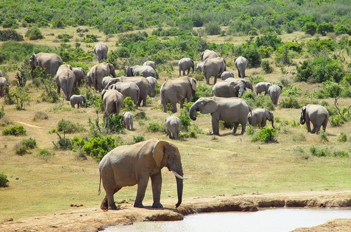

Addo Elephant & Garden Route Parks
The Addo Elephant National Park is a sanctuary for elephants and other wildlife in the Eastern Cape. It offers amazing safari experiences close to Cape Town, ideal for spotting elephants, lions, and buffalo in their natural habitat.
The nearby Garden Route National Parks offer coastal forests, lagoons, and wetlands teeming with birdlife and marine animals. Hiking, canoeing, and guided tours allow visitors to explore South Africa’s unique landscapes and biodiversity.